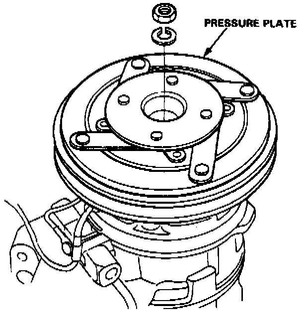
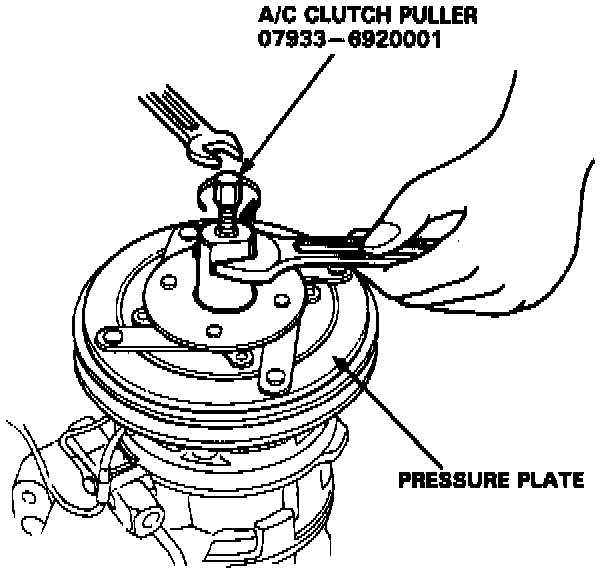
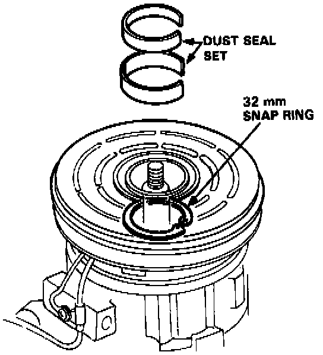
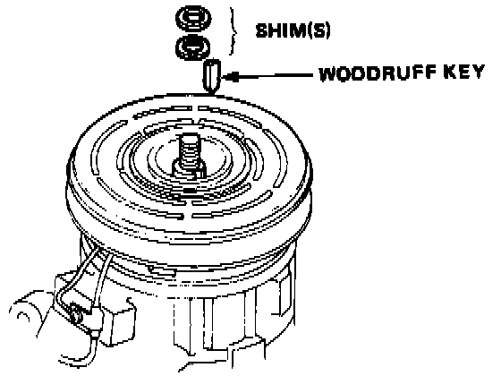
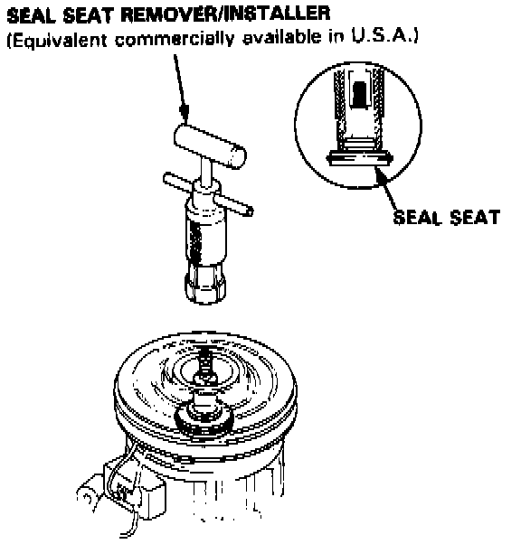
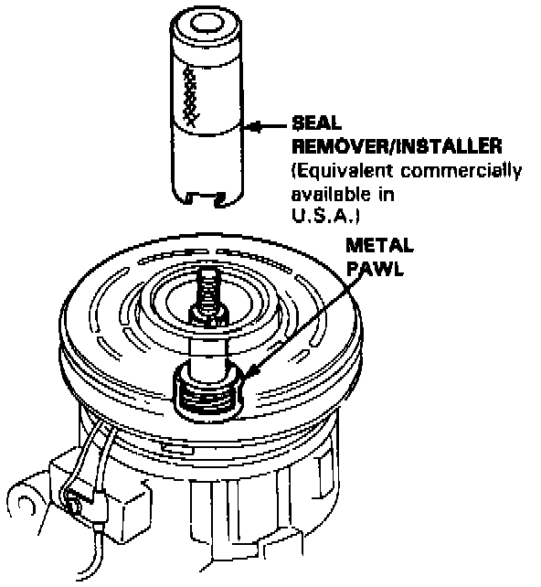
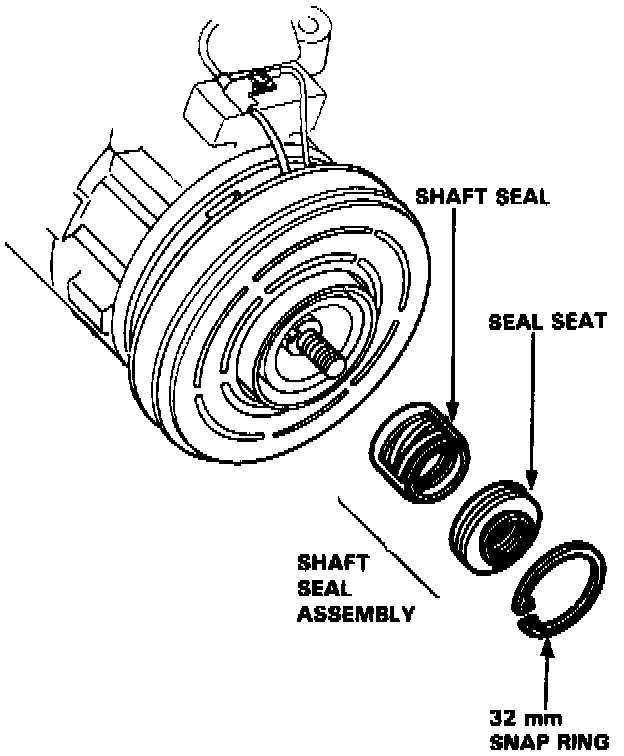

Removal
NOTE: Make sure the suction and discharge joints are plugged with caps.

1. Remove the pressure plate.
- Remove the nut and spring washer while holding the pressure plate.
- Thread the special tool into the pressure plate and remove the pressure plate by screwing in the center bolt.
NOTE: Removal of the clutch pulley and coil is not necessary.

2. Remove the dust seal set.
Remove the 32 mm snap ring.

3. Remove the woodruff key from the key way.
NOTE: If the woodruff key is to be reused, be careful not to damage it.
4. Remove the shim(s).
NOTE: After removing, store shim(s) safely in a parts rack.

5. Seat the seal plate into the groove of the special tool.
6. Pull out the seal seat.

7. Insert the special tool into the compressor aligning the cutout of the remover with the metal pawl of the seal case.
8. Rotate the special tool clockwise or counterclockwise to make sure that the cutout is engaged with the metal pawl.
9. Press the remover until it bottoms, then turn it counterclockwise as far as it will go.
10. Withdraw the remover.

11. Lay down the compressor and clean the shaft seal contacting face of the compressor with cleaning solvent.
CAUTION:
- Keep the cleaning solvent and dirt out of the compressor.
- Use only a lint free cloth for cleaning.
- Do not spill the refrigerant oil from the compressor. Refill the same amount of the oil if the oil is spilled out.